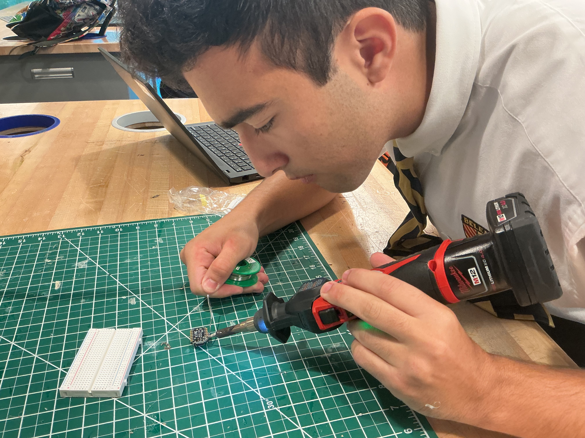

Soldering
We soldered the pins onto my microcontroller so that I could put it on my breadboard to be able to code.
This page is dedicated to my Embedded Programming project. Here, small computer systems known as microcontrollers are programmed to perform specific functions within larger devices. The process begins with writing code, often in languages like C or Python, which defines how the system should respond to inputs such as sensors or buttons. This code is then compiled and uploaded to the microcontroller using an Integrated Development Environment (IDE). Once programmed, the microcontroller executes the instructions to control hardware components—such as LEDs, motors, or displays—according to the desired behavior. Testing, debugging, and refining the code follow to ensure the system runs efficiently and reliably within its embedded application.
We soldered the pins onto my microcontroller so that I could put it on my breadboard to be able to code.
We coded the microcontroller in correspondence with the desired functions of the machine. We organized each point on the circuitboard so that the wiring could be placed in convenient spots and so that the outcome and flow is ensured..
We wired up the breadboard in respect to the programming so that all the physical properties were set correctly and the function woulkd work in order.
Here is the machine/programming doing its function.
he hardest part of the embedded programming process was troubleshooting errors in the code that caused the microcontroller to not respond correctly. I solved this problem by testing each section of code separately and using the serial monitor to identify where the issue occurred. Overall, the process went smoothly even though programming the sensors and outputs required careful attention to timing and logic to make everything function together properly..
Laser cutting allowed for precise cuts on materials like wood and acrylic. Documentation for this step will be expanded later with images and notes.